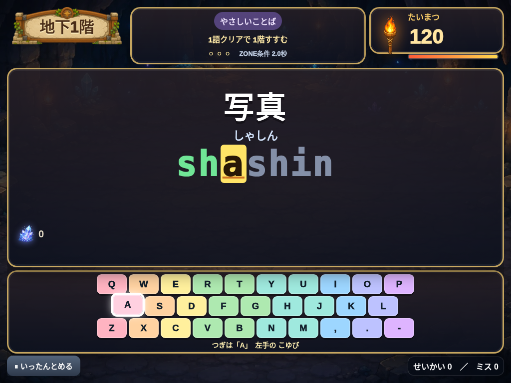
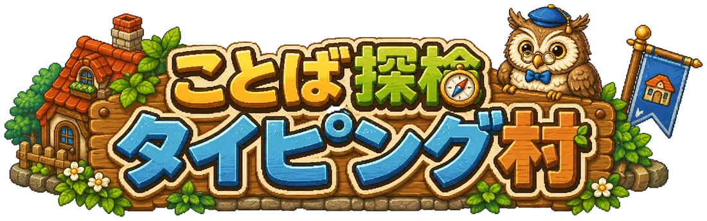
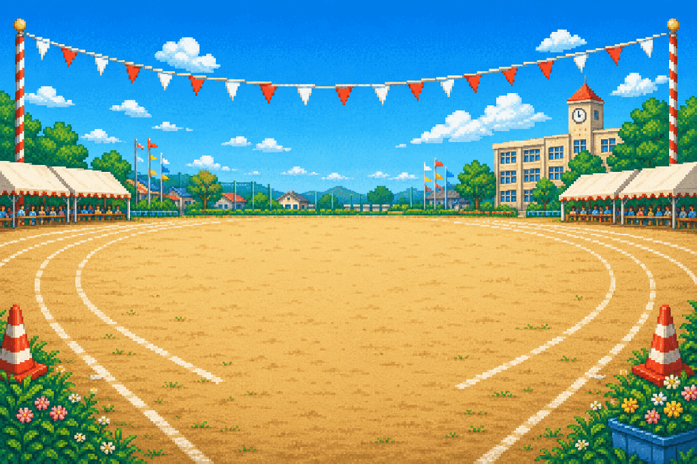

ことば・タイピング
ことば探検タイピング村
村を育てて、その先の洞窟へ。
ことばを打って素材を集め、自分の村を育てよう。村を完成させたら「試練の洞窟」へ。どこまで進めるか挑戦して、みんなの記録と自分のベストを比べられます。
あそぶキーボード推奨・Googleログイン不要
洞窟の比較はブラウザごとの自己ベストで集計します。30件未満は集計中と表示されます。
遊んで、見つける。自分の「できた！」
小学生が遊びながら学べる、無料の教育アプリ。
学校でも、おうちでも。気になるアプリで遊んでみよう。
さあ、どれであそぶ？
公開中 3 作品


ことば・タイピング
村を育てて、その先の洞窟へ。
ことばを打って素材を集め、自分の村を育てよう。村を完成させたら「試練の洞窟」へ。どこまで進めるか挑戦して、みんなの記録と自分のベストを比べられます。
あそぶキーボード推奨・Googleログイン不要
洞窟の比較はブラウザごとの自己ベストで集計します。30件未満は集計中と表示されます。
ことば・ひらがな
ことばを見つけて、自分だけの町へ。
ひらがなを読んで、ぴったりの絵を選ぼう。宝箱から集めたアイテムを好きな場所に並べて、自分だけの町づくり。あ行からわ行まで220語に挑戦できます。
あそぶタッチ・マウス対応・Googleログイン不要
町の記録はこの端末・ブラウザに保存。「せんせい」メニューからセーブを書き出したり、GAS版の記録を読み込んだりできます。

算数・計算
こたえて、ひっぱれ！
たし算・ひき算・かけ算・わり算に答えて、綱引き勝負。動物CPUとの対戦、1台をはさんだ2人対戦、月間王者のゴーストへの挑戦を楽しめます。
あそぶタッチ・キーボード対応・Googleログイン不要
通常CPU戦と2人対戦は通信できない時も遊べます。公式記録・月間王者・ゴーストはK's Factory一般公開サーバーを利用し、氏名・メールアドレスは保存しません。
公開できたアプリから、ここに追加していきます。
学校でも、おうちでも
「あそぶ」を押すと、新しいタブでアプリが開きます。アプリごとの案内を読んで、遊びはじめてください。
タイピング村とひらがなタウンは、同じ端末・同じブラウザで続きから遊べます。計算バトルはGoogleログイン不要で公式記録・月間王者を共有し、氏名・メールアドレスは保存しません。
学校の端末では、アクセスの制限がある場合があります。使う端末で、画面・入力・音の設定を先に確かめてください。